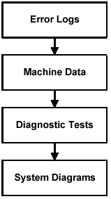
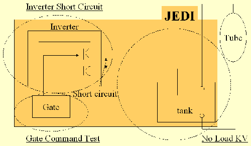

Operating Documentation
Direction 5181166-800, Rev# 7
BrightSpeed Select Service Methods Adv
Operating Documentation |
| Last Revised | August 24, 2005 |
The X-Ray generation subsystem has the capability to give detailed error messages when problems occur. As such, examining the error logs (such as the gesyslog) is the first step in troubleshooting. Comparing real-time data , or machine data, acquired during scanning to normal operating range is the next step. Use the Real-Time Stats viewer for looking at raw machine data. Finally, using the X-Ray generation diagnostic tools can be used as the last resort in troubleshooting for complicated problems. Illustration 1 is a simple diagram of the troubleshooting process.
Illustration 1: Troubleshooting Process

References:
Documentation for the Common Service Desktop, which includes information on the error log and Real Time Stats viewers as well as diagnostic tools.
Schematic 5167185 JEDI Lite Interconnection.
The X-Ray generation subsystem provides a diagnostic sequence for troubleshooting complex kV issues. Although the tests are separate and unique (and are in this manual as such), they should be run in the following sequence:
No Load kV Test (LS16, Ultra & Plus).
This sequence isolates each major FRU in the subsystem.
Illustration 2: KV Diagnostics for JEDI

| NOTE: | For a larger version of the above illustration, click on the pdf icon below: |
Media File 1: KV Diagnostics for JEDI

In this test, the inverter is commanded at a fixed frequency and is loaded with a short circuit. Verification is made that inverter currents are correctly set. At the same time verification is made that no high voltage is measured. This test is performed without connecting the HV Tank to the inverter so that no X-ray is generated. Anode rotation and filament drive are not activated during this test.
In this test an exposure is taken as in application mode except that no filament drive nor anode rotation is running. Verification is made that the inverter currents are correctly set and that kV regulation is operating properly. As no filament drive is applied, no x-rays are generated.
For mA function troubleshooting there is a Heater Diagnostic test that can be run to test the functionality of the heater board inside the auxiliary box. Other troubleshooting procedures can be Meter Verification (16, Ultra, Plus)and Filament Calibration.
For further information, see Heater Diagnostic Test (LS16, Ultra & Plus).
For X-Ray tube anode rotation troubleshooting there is a Rotor Diagnostic test that can be run to test the functionality of the rotation board inside the auxiliary box.
For further information, see Rotor Diagnostic Test (BSD Select).